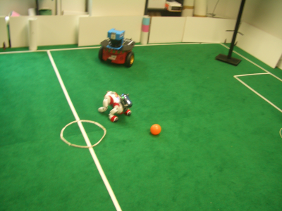
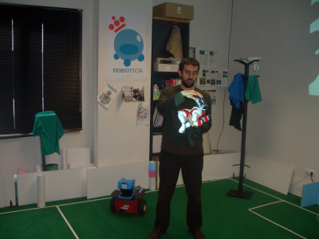
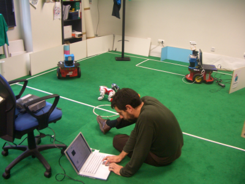
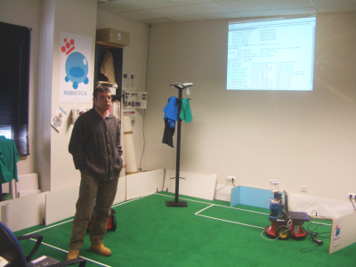
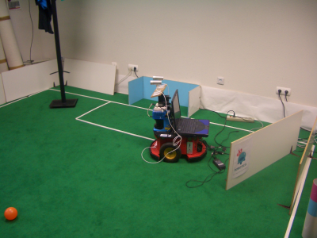
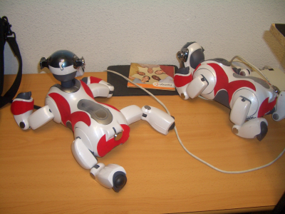
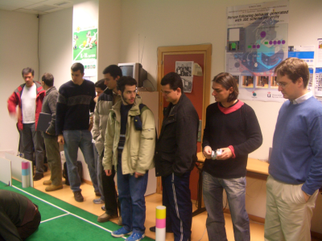
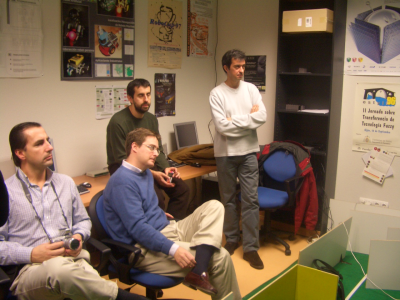
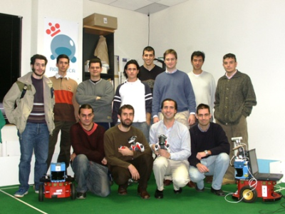

|
Visita al grupo de robótica de la Universidad Rey Juan Carlos (URJC). Nov. 2005 |
|
 |
Evento: Visita al grupo de robótica de la Universidad Rey Juan Carlos (URJC)
Fechas: 28 Noviembre de 2005
Organiza: A.R.D.E: Asociación de Robótica de España
Coordinador: Alejandro Alonso Puig
Entra las actividades de la Asociación de Robótica A.R.D.E, están las de realizar visitas a los diferentes grupos de investigación españoles. La primera visita se realizó al grupo de robótica de la Universidad Rey Juan Carlos. La visita duró unas 2 horas y fue realmente interesante.
Nada más entrar a uno de los laboratorios, lo que más llama la atención es un campo de fútbol que cubre todo el suelo. Lo utilizan para probar su equipo de fútbol de robots Aibos. Vicente Matellán nos estuvo enseñando el funcionamiento de estos robots y todo el software que han desarrollado para el control de su equipo de fútbol. En la derecha vemos a Vicente Matellán sentado en el suelo haciendo una demo de los robots. Esto es lo que tiene la robótica, que hay que ser todo terreno ;-)
Con el equipo de Aibos que tienen, compiten en el concurso RoboCup.
|
 |
 |
A continuación, José María Cañas nos enseñó los proyectos de robótica en los que está trabajando (Foto de la izquierda), utilizando el robot Pioneer. Sobre esta plataforma tienen situadas dos cámaras, un sensor láser y un portátil. En uno de los proyectos que han realizado, el robot es capaz de seguir a un individuo sólo por visión. Actualmente están trabajando en la integración de todos los sistemas para conseguir tener un robot “azafata” que sea capaz de navegar por todo el edificio. Los usuarios le indicarán en una pantalla táctil a qué despacho quieren ir y el robot los guiará. Ya tienen resueltos todos los problemas. Sólo falta integrarlo todo.
|
 |
 |
En la foto de la izquierda se puede ver dos de los Aibos de su equipo de fútbol, que por cierto, están al lado de un CD de Ubuntu :-) .En la derecha, algunos de los visitantes están contemplando la demostración.
|
 |
 |
En la izquierda están, de izquierda a derecha, Alejandro Alonso, Andrés Prieto-Moreno, Vicente Matellán y Javier de Lope.
En la derecha estamos todos. La clásica foto de familia :-) De izquierda a derecha y de arriba a abajo: Jesús Leganes, Gonzalo Maturana , Jesús Antonio Maturana, José Luis Lozano, Francisco Escudero, Andrés Prieto-Moreno, Javier de Lope, José María Cañas, Manuel Jesús García, Vicente Matellán, Alejandro Alonso y Juan González.
|
 |
 |
Una de las cosas que más me llamó la atención es que utilizan sólo Software Libre. El software lo liberan bajo licencia GPL y en los ordenadores tienen instalados diferentes distribuciones de GNU/Linux. El entrar en un laboratorio y ver que hay GNU/Linux en todos los ordenadores nos emociona a los que, como yo, también usamos Software Libre. Es como estar en casa ;-)
Al terminar nos fuimos a comer, Vicente, Jose María, Andrés, Javier de Lope, Alejandro y yo.
Fue una visita muy interesante. Yo ya concía a Vicente Matellán, pero hacía mucho tiempo que no nos veíamos. Al que no conocía era a Jose María Cañas. Durante la comida estuvimos hablando sobre nuestros trabajos de robótica y quedé con él para venir un día con más calma a la Rey Juan Carlos, tomarnos un café y enseñarles a Cube Revolutions. Después de cruzarnos algunos emails, me invitaron a dar una charla a los alumnos de doctorado, en Enero de 2006. [Más información]
30/Enero/2006: Publicada información en la web
A Vicente Matellán y José María Cañas, por dedicarnos su valioso tiempo y enseñarnos sus últimas investigaciones. ¡Muchísimas gracias!
A Alejandro Alonso, que ha sido el que organizó y coordinó la visita. Este tipo de eventos son los que realmente difunden la robótica. ¡Muchísimas gracias!
A la asociación de robótica A.R.D.E, por difundir la robótica e implicarse en la organización de este tipo de eventos.